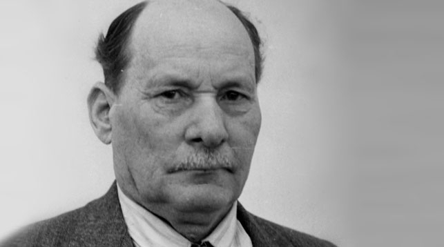

Сардэчна запрашаем, наведвальнік (калі ласка, далучайся да нас) на гэты інтэрнэт-партал, дзе вы можаце знайсці інфармацыю аб некаторых беларускіх пісьменніках. Чытайце і пазнавайце новае!
Дзеяч дня

Яку́б Ко́лас, сапр. Канстанці́н Міха́йлавіч Міцке́віч (22 кастрычніка (3 лістапада) 1882, засценак Акінчыцы (цяпер у межах г. Стоўбцы) — 13 жніўня 1956, Мінск) — беларускі паэт, празаік, драматург, крытык, публіцыст, перакладчык, вучоны, педагог, грамадскі дзеяч; адзін з заснавальнікаў сучаснай беларускай літаратуры і літаратурнай мовы. Народны паэт Беларусі (1926). Акадэмік АН Беларусі (1928). Заслужаны дзеяч навукі Беларусі (1944).
Чытаць падрабязней >Глядзіце таксама
Распрацоўшчыкі
Па пытаннях тэхнічнай падтрымкі звяртацца да каманды франтэндэраў БДУІР ФКСіС ПЗІТ.
Матэрыялы супольнасці даступныя ў адпаведнасці з умовамі ліцэнзіі CC-BY-SA, калі не пазначана іншае.